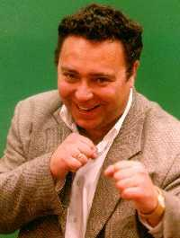

На Богебьерга надейся, а сам не плошай

Мечеслав Серенький специально для эсеров, Мельбурн-Рига
Я вышел из дома и сел в красный "Шевроле" 79-го года выпуска (литая резина, шипованные диски, подвески для королевы), на ходу закурив гаванскую сигару, полученную в подарок от внучатого племянника сестры Фиделя Кастро (а я её ебал раком и вообще почти 6 лет говорил ей, что делать и как себя вести). Дорога предстояла неблизкая. Пролететь на самолёте компании Delta Airlines (билет в бизнес-класс за 1700 долларов, кормят в пути три раза, все стюардессы молодые и с бритыми подмышками, а всё бухло бесплатно, и можно взять с собой по выходу из самолёта) 11 часов в один конец, чтобы воочию наблюдать за первым поединком двух самых хуёвых из 12 лучших участников Кубка колотиловки (Мамин Сибиряк). Приехав в аэропорт Мельбурна, я проследовал к нужному gate (в Австралии именно так называет "ячейки", к которым подают трап очередного прилетающего или улетающего самолёта. А ещё в Австралии, кстати, охуенно красивые девки, всегда тепло, пиво подают только ледяное и очень пиздато играют в регби. Вот один мой друг уже восемь раз становился чемпионом страны, выступает за сборную, и у меня есть его автограф)... Ну так вот, я подошёл к нужному gate, дал билет и паспорт, после чего уселся в самолёт. Вскоре после взлёта откушал лобстеров с белым вином "Paris und Champagne" 60-летней выдержки, после чего крайне незаметно отошёл ко сну...
Я проснулся от того, что вокруг меня собрались почти все пассажиры бизнес-класса (а там были очень известные и уважаемые люди, включая Питера ван ден Хугебанда, Яну Клочкову и следователя по особо важным делам города Саратова Виктора Саратова). Все они, открыв рот и выражая бурное удивление, смотрели на мои часы. Часы, которые подарил мне мой дедушка...
Мой дедушка, Иоканан Серенький, был пехотинцем в одном полку. Иоканан в совершенстве владел пикой, знал несколько иностранных языков и умел аккуратно мочиться, лёжа на спине. Однажды Иоканан стал свидетелем того, как в Царя™ какой-то самозванец хуйнул водородную бомбу. Царь™ быстро ретировался, а там, где только что стояла его нога в сафьяновом сапожке из льна, остались лежать золотистые часы. Мой дедушка поднял их, радостно агукнул, и подумал: "Отдам их внуку. Даром что ли, камни в 156 карат и надпись "Буре" на крышке". После чего спрятал их в жопу. Иоканан носил их в жопе лет 16. Пока не захотелось какать, но к тому моменту на свет уже появился я, будущий обладатель сего трофея...
Я рассказал пассажирам историю про Иоканана, назидательно пукнул и включил ноутбук самой новой модели (пиксели, встроенная мышь, бюро онлайн). Надо было состряпать эпиграф к дуэли "FC Kixa" и "Vot tak smrad", а ведь дуэлянты прежде не встречались. Кстати, коллеги, когда вы говорите - "Это Инга и Артём. Они встречаются" - подразумеваете ли вы под этим, что между двумя молодыми людьми время от времени происходит коитус? Я бросил взгляд на туфельки "Чезаре Бово" за 600 евро, которые давеча купил в количестве семи пар у своего диллера по обуви, и подумал - ну его нахуй, буду по ситуации ориентироваться. После чего отправился в туалет, по пути ущипнув за жопу стюардессу. Посрав и вымыв руки, я вернулся на своё место и беспокойно заснул. Лететь оставалось ещё 5 часов...
Я проснулся, когда самолёт совершил посадку. Стюардесса объявила: "К сожалению, мы вернулись в Мельбурн, потому что в районе Европы не смогли пролететь сквозь Тучу. Поскольку весь экипаж боялся пиздеца, как смерти, было решено отправиться в обратный путь. Выходите, покупайте билеты, летите назад в Европу, дерзайте против Тучи, а нам ещё детей кормить и ебаться на корпоративных вечеринках". Я обмяк, но тут же собрал себя в руку, вышел из самолёта к нужному gate и позвонил редактору газеты Вадиму Почмию. "Вадимка, я снова в Австралии. Нелётная погода", - пробормотал я. "А похуй, Мечик, - радостно отозвался шеф. - Там уже на 11-й минуте стало ясно, что в составе "Vot tak smrad" играет дисквалифицированный форвард Ян Богебьерг. Так что 0:3 им, 3:0 - "Киксе", тебе - уважение, мне - бабло. На ответный поединок полетишь?" Я посмотрел на уезжавший на заправку самолёт с эмблемой Delta Airlines сквозь хромированный бинокль Sony, инкрустированный камушками на баснословную сумму. "Была бы там интрига, а там и похуй - съезжу развеюсь", - пробормотал я себе под нос, размельчая ногтем через пакетик первосортный кекес, который я купил у негра Джима за 4000 долларов/г и положил в карман полотняных штанов из бычьей кожи...